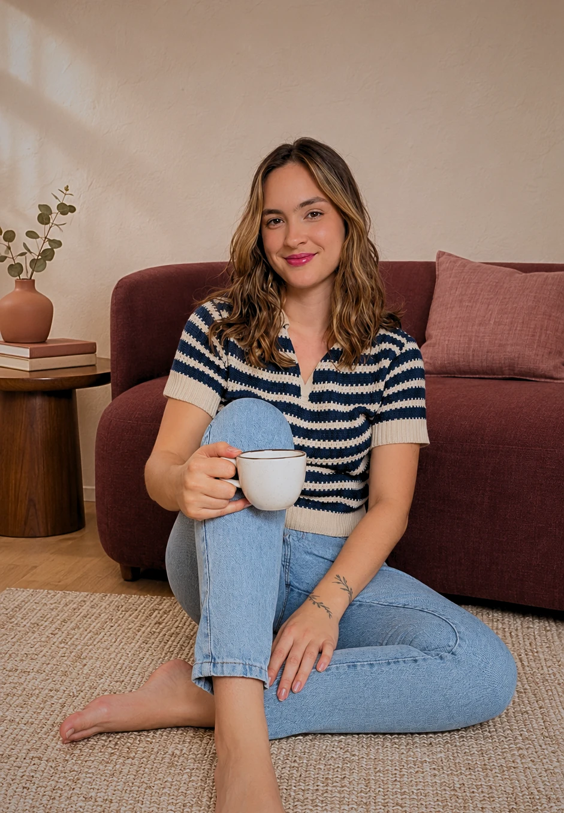

Um primeiro contato
Você pode enviar uma mensagem para conhecer as informações sobre o atendimento e verificar possibilidades de horário.
Um convite para olhar com mais profundidade para sua história, seus desejos e aquilo que se repete na sua vida. Cada percurso tem seu próprio tempo.
Conversar sobre atendimento ↗A psicanálise é um trabalho de investigação da vida psíquica por meio da fala e da escuta. Sonhos, lembranças, conflitos e repetições podem ganhar novas associações ao longo do processo.
Não se trata de oferecer respostas prontas ou prometer mudanças rápidas, mas de sustentar um espaço em que cada pessoa possa falar sobre sua experiência singular.

Psicanalista
Sou uma mulher que, ao longo da vida, passou por experiências que despertaram em mim o desejo de compreender melhor quem sou, o que sinto e as histórias que carrego.
Foi nessa busca por mim mesma que encontrei a importância de ter um lugar onde pudesse falar livre e abertamente sobre tudo o que quisesse, sem amarras, sem preconceitos e sem a necessidade de encontrar as palavras perfeitas.
Esse encontro com a escuta transformou também a maneira como passei a olhar para o outro. Hoje, é esse espaço que desejo oferecer: um lugar de acolhimento, respeito e liberdade para que cada pessoa possa falar de sua própria história, de seus desejos, conflitos e descobertas, no seu tempo.
Meu trabalho é voltado ao atendimento psicanalítico online de adultos, com atenção à singularidade de cada percurso.
Você pode enviar uma mensagem para conhecer as informações sobre o atendimento e verificar possibilidades de horário.
As sessões acontecem online, em um espaço de escuta, respeito e confidencialidade.
O trabalho se constrói ao longo dos encontros, sem respostas padronizadas ou promessas de resultados.
“Por que, às vezes, repetimos histórias mesmo desejando algo diferente?”
Essa é uma das muitas perguntas que podem encontrar lugar em um processo de análise.
Os atendimentos são realizados na modalidade online, para pessoas adultas.
Não. Você pode começar falando sobre o que a levou a buscar atendimento, mesmo que ainda seja difícil colocar em palavras.
Os valores e as condições de atendimento são informados diretamente no contato inicial.
Envie uma mensagem pelo WhatsApp. A disponibilidade será confirmada no contato.
Se deseja conhecer melhor o atendimento psicanalítico online, entre em contato. Podemos conversar sobre o funcionamento das sessões e as possibilidades de horário.
Enviar mensagem pelo WhatsApp ↗Este canal é destinado a informações sobre atendimento e não substitui serviços de urgência.